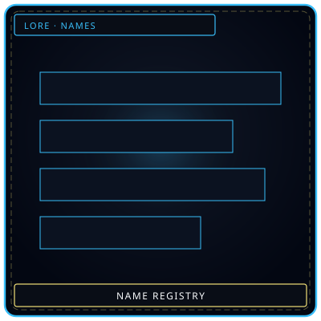
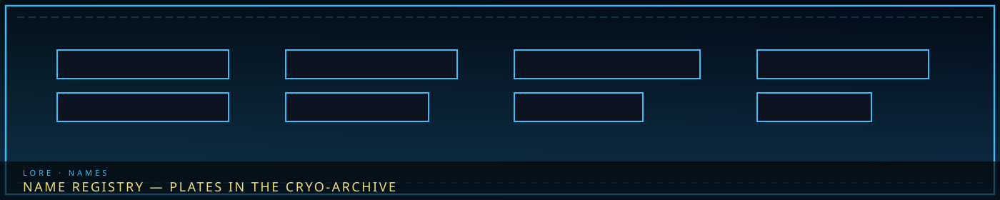
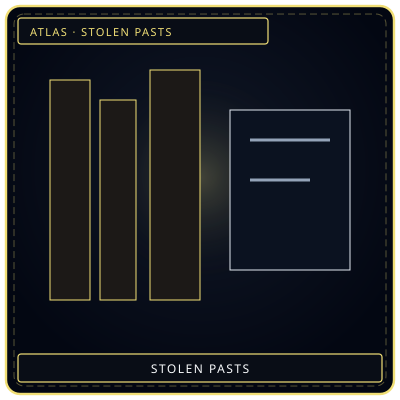
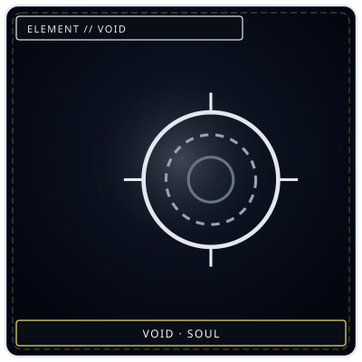

PlatesNames kept
/// RAPID JUMP:
STATUS: ARCHIVE VERIFIED |
CLEARANCE: LEVEL-4 OVERSIGHT |
PROTOCOL: REVERIE DIRECTORATE
ARTICLE
DISCUSSION
SOURCE
HISTORY
YEAR 4,238 · DAWN OF HOPE
LORE & WORLD RECORD
The Somnarak Name Registry & Cryo-Archive
Contents
- Overview
- Names for Entity Documentation
- How To Use
- English Names — Given Names (남성 — Male)
- English Names — Given Names (여성 — Female)
- English Names — Family Names (성 — Surnames)
- Korean Names — Given Names (남성 — Male)
- Korean Names — Given Names (여성 — Female)
- Korean Names — Family Names (성 — Surnames)
- Somnarak Special Names — Given Names
- Somnarak Special Names — Family Names
- Somnarak Special Names — Entity Documentation Authors
- How To Use These Authors
- Rules For Creating Titles
- Mixed Name Creation Rules
- How To Make Names Sound Real (Not AI-Generated)
- Example Mixed Names
- Rules Summary
- Example Name Combinations
- X-B. Glossary of Terms
- Known People of Somnarak
“Plates of names. Empty plates are the ones the city lost.”


Stolen pastsNames taken
BlankWhat was erasedOverview
# SOMNARAK — Name Registry
Names for Entity Documentation
"In Somnarak, names are not given. They are earned — through sorrow, through survival, through service."
How To Use
When filling out entity documentation, use names from this list. Mix and match family names with given names. Use the appropriate category:
- English Names — for general personnel
- Korean Names — for Somnarak citizens
- Somnarak Special Names — for unique characters, Echo-Cores, or significant personnel
English Names — Given Names (남성 — Male)
| # | Name | Meaning |
|---|---|---|
| 1 | Arthur | Noble, strong |
| 2 | Edwin | Rich friend |
| 3 | Felix | Happy, fortunate |
| 4 | Hector | Steadfast |
| 5 | Isaac | He will laugh |
| 6 | Leon | Lion |
| 7 | Marcus | Warlike |
| 8 | Nolan | Champion |
| 9 | Oscar | Divine spear |
| 10 | Silas | Forest, woods |
| 11 | Tobias | God is good |
| 12 | Victor | Conqueror |
| 13 | Wesley | Western meadow |
| 14 | Adrian | Dark one |
| 15 | Basil | Kingly |
| 16 | **Cedric | Kindly, loved |
| 17 | Darius | Wealthy |
| 18 | Emil | Rival |
| 19 | Felix | Lucky |
| 20 | Gavin | White hawk |
English Names — Given Names (여성 — Female)
| # | Name | Meaning |
|---|---|---|
| 1 | Alice | Noble |
| 2 | Bianca | White, pure |
| 3 | Clara | Bright, clear |
| 4 | Diana | Divine |
| 5 | Elena | Bright, shining |
| 6 | Fiona | White, fair |
| 7 | Grace | Elegance |
| 8 | Hazel | Commander |
| 9 | Iris | Rainbow |
| 10 | Jade | Precious stone |
| 11 | Kate | Pure |
| 12 | Luna | Moon |
| 13 | Maya | Illusion |
| 14 | Nora | Honor |
| 15 | Olive | Peace |
| 16 | Pearl | Precious |
| 17 | Quinn | Wisdom |
| 18 | Rose | Flower |
| 19 | Sophia | Wisdom |
| 20 | Tessa | Harvester |
English Names — Family Names (성 — Surnames)
| # | Name | Meaning |
|---|---|---|
| 1 | Ashford | Ford near ash trees |
| 2 | Blackwell | Dark spring |
| 3 | Crawford | Crow ford |
| 4 | Dunmore | Great hill |
| 5 | Everett | Brave boar |
| 6 | Fairfax | Beautiful hair |
| 7 | Graves | Steward |
| 8 | Holloway | Hollow way |
| 9 | Ingram | Angel raven |
| 10 | Kingsley | King's meadow |
| 11 | Lancaster | Roman fort |
| 12 | Mercer | Merchant |
| 13 | Nightingale | Night singer |
| 14 | Osborne | Divine bear |
| 15 | Prescott | Priest's cottage |
| 16 | Redmond | Wise protector |
| 17 | Sinclair | Holy clarity |
| 18 | Thornton | Thorny town |
| 19 | Underwood | Below the forest |
| 20 | Whitmore | White moor |
Korean Names — Given Names (남성 — Male)
| # | Name | Hangul | Meaning |
|---|---|---|---|
| 1 | Minho | 민호 | Brave and good |
| 2 | Jaehwan | 재환 | Strong and bright |
| 3 | Sunwoo | 선우 | Good and righteous |
| 4 | Dohyun | 도현 | Wise and virtuous |
| 5 | Hyunwoo | 현우 | Wise and brave |
| 6 | Jungwoo | 정우 | Righteous and brave |
| 7 | Seojun | 서준 | Talented and handsome |
| 8 | Yoohwan | 유환 | Gentle and bright |
| 9 | Kangmin | 강민 | Strong and clever |
| 10 | Donghyun | 동현 | Eastern wisdom |
| 11 | Sungjin | 성진 | Successful and genuine |
| 12 | Woojin | 우진 | Brave and precious |
| 13 | Hyukjin | 혁진 | Bright and precious |
| 14 | Junhyuk | 준혁 | Talented and bright |
| 15 | Taehoon | 태훈 | Great and meritorious |
| 16 | Youngsoo | 영수 | Eternal life |
| 17 | Kyungsoo | 경수 | Respectful and long-lived |
| 18 | Byungho | 병호 | Glorious and great |
| 19 | Changwook | 창욱 | Creator of glory |
| 20 | Insu | 인수 | Human and long-lived |
Korean Names — Given Names (여성 — Female)
| # | Name | Hangul | Meaning |
|---|---|---|---|
| 1 | Sooah | 수아 | Gentle and beautiful |
| 2 | Hayoon | 하윤 | Summer glow |
| 3 | Jisoo | 지수 | Wisdom and beauty |
| 4 | Minji | 민지 | Wise and earthy |
| 5 | Yuna | 유나 | Gentle and graceful |
| 6 | Eunji | 은지 | Silver and earth |
| 7 | Somin | 소민 | Small and clever |
| 8 | Hayeon | 하연 | Summer grace |
| 9 | Jimin | 지민 | Wisdom and cleverness |
| 10 | Nari | 나리 | Lily flower |
| 11 | Bora | 보라 | Purple |
| 12 | Dahye | 다혜 | Great wisdom |
| 13 | Eunbi | 은비 | Silver rain |
| 14 | Gaeul | 가을 | Autumn |
| 15 | Haeun | 하은 | Summer grace |
| 16 | Iseul | 이슬 | Dew |
| 17 | Jieun | 지은 | Wisdom and grace |
| 18 | Kyungmi | 경미 | Respectful and beautiful |
| 19 | Minsu | 민수 | Clever and beautiful |
| 20 | Nakyung | 나경 | Beautiful scenery |
Korean Names — Family Names (성 — Surnames)
| # | Name | Hangul | Meaning |
|---|---|---|---|
| 1 | Kim | 김 | Gold |
| 2 | Lee | 이 | Plum tree |
| 3 | Park | 박 | Gourd |
| 4 | Choi | 최 | Top, highest |
| 5 | Jung | 정 | Righteous |
| 6 | Kang | 강 | Strong |
| 7 | Cho | 조 | Beginning |
| 8 | Yoon | 윤 | Govern |
| 9 | Jang | 장 | Long life |
| 10 | Lim | 임 | Forest |
| 11 | Shin | 신 | New |
| 12 | Oh | 오 | Five |
| 13 | Seo | 서 | West |
| 14 | Kwon | 권 | Authority |
| 15 | Hwang | 황 | Yellow |
| 16 | Ahn | 안 | Peace |
| 17 | Song | 송 | Pine tree |
| 18 | Bae | 배 | Pear |
| 19 | Noh | 노 | Old |
| 20 | Go | 고 | High |
Somnarak Special Names — Given Names
Korean Names
| # | Name | Hangul | Meaning |
|---|---|---|---|
| 1 | Hanul | 한울 | Sky — the one who looks up |
| 2 | Byeol | 별 | Star — born under starlight |
| 3 | Duri | 두리 | Two — born a twin |
| 4 | Eunbyeol | 은별 | Silver star — born in moonlight |
| 5 | Gureum | 구름 | Cloud — born in fog |
| 6 | Haneul | 하늘 | Sky — born in the open |
| 7 | Iseul | 이슬 | Dew — born at dawn |
| 8 | Jjanji | 짠지 | Bitter — born in sorrow |
| 9 | Kkot | 꽃 | Flower — born in the Echo Gardens |
| 10 | Miru | 미루 | Delay — born late |
| 11 | Nabi | 나비 | Butterfly — born in the Dream |
| 12 | Ongi | 온기 | Warmth — born near the Ember Child |
| 13 | Purun | 푸른 | Blue — born near the Veil |
| 14 | Saetbyeol | 새벽별 | Dawn star — born at dawn |
| 15 | Uri | 우리 | Us — born in community |
| 16 | Yeoul | 여울 | Stream — born near the Weeping |
| 17 | Chaeum | 차음 | First sound — born with a cry |
| 18 | Him | 힘 | Strength — born strong |
| 19 | Kkeut | 끝 | End — born at the end |
| 20 | Sijak | 시작 | Beginning — born at the start |
Korean + Latin Names
These names blend Korean given names with Latin suffixes or roots — as if Korean naming conventions evolved alongside classical education. The Latin element often describes a quality, not a direct translation.
| # | Name | Pronunciation | Origin Story |
|---|---|---|---|
| 1 | Hanulya | 하눌야 | Korean "Hanul" (sky) + Latin "-ya" suffix — a name whispered by mothers |
| 2 | Byeolla | 별라 | Korean "Byeol" (star) + Latin "-a" ending — common in Zone A |
| 3 | Durien | 두리엔 | Korean "Duri" (two) + Latin "-ien" — twins in the Echo Gardens |
| 4 | Eunaris | 유나리스 | Korean "Eun" (silver) + Latin "-aris" — born in moonlight |
| 5 | Gureumis | 구르미스 | Korean "Gureum" (cloud) + Latin "-is" — dreamers in Zone D |
| 6 | Haneulis | 하늘리스 | Korean "Haneul" (sky) + Latin "-is" — those who look up |
| 7 | Iseulia | 이슬리아 | Korean "Iseul" (dew) + Latin "-ia" — born at dawn |
| 8 | Kkotina | 꼬티나 | Korean "Kkot" (flower) + Latin "-ina" — garden tenders |
| 9 | Nabilla | 나빌라 | Korean "Nabi" (butterfly) + Latin "-illa" — Dream walkers |
| 10 | Ongius | 온기우스 | Korean "Ongi" (warmth) + Latin "-us" — healers in Zone D |
| 11 | Purunis | 푸르니스 | Korean "Purun" (blue) + Latin "-is" — Veil technicians |
| 12 | Saetris | 새트리스 | Korean "Saet" (dawn) + Latin "-ris" — born at first light |
| 13 | Yeoulia | 여울리아 | Korean "Yeoul" (stream) + Latin "-ia" — near the Weeping |
| 14 | Himarus | 히마루스 | Korean "Him" (strength) + Latin "-arus" — warriors |
| 15 | Kkeutris | 끝트리스 | Korean "Kkeut" (end) + Latin "-ris" — born at the end |
Korean + English Names
These names blend Korean roots with English sounds at the phonetic level — as if the two languages merged naturally over generations. The Korean element provides the root; the English element provides the ending or middle sound.
| # | Name | Pronunciation | Origin Story |
|---|---|---|---|
| 1 | Hangrey | 한그레이 | Korean "Han" (great) + English "grey" — born under grey skies |
| 2 | Byeolsha | 별샤 | Korean "Byeol" (star) + English "shard" — born near Echo crystals |
| 3 | Durivel | 두리벨 | Korean "Duri" (two) + English "veil" — born under the Veil with a sibling |
| 4 | Euncris | 은크리스 | Korean "Eun" (silver) + English "crystal" — born near Han-crystal |
| 5 | Gureumift | 구름드리프트 | Korean "Gureum" (cloud) + English "drift" — born in the Desolate |
| 6 | Haneulash | 하늘애쉬 | Korean "Haneul" (sky) + English "ash" — born after a Han-storm |
| 7 | Iseulfros | 이슬프로스 | Korean "Iseul" (dew) + English "frost" — born at dawn in winter |
| 8 | Kkotlom | 꼬블룸 | Korean "Kkot" (flower) + English "bloom" — born in the Echo Gardens |
| 9 | Nabirim | 나비림 | Korean "Nabi" (butterfly) + English "dream" — born in the Dream realm |
| 10 | Ongiarm | 온기암 | Korean "Ongi" (warmth) + English "warm" — born near the Ember Child |
| 11 | Purunlu | 푸른루 | Korean "Purun" (blue) + English "blue" — born near the Veil |
| 12 | Saeton | 새돈 | Korean "Saet" (dawn) + English "dawn" — born at first light |
| 13 | Yeoullo | 여울로 | Korean "Yeoul" (stream) + English "flow" — born near the Weeping |
| 14 | Himong | 힘옹 | Korean "Him" (strength) + English "strong" — born strong |
| 15 | Kkeutend | 끝엔드 | Korean "Kkeut" (end) + English "end" — born at the end |
Somnarak Special Names — Family Names
Korean Family Names
| # | Name | Hangul | Meaning |
|---|---|---|---|
| 1 | Hanbaram | 한바람 | Han wind — family of the Desolate |
| 2 | Eolgul | 얼굴 | Face — family of masks |
| 3 | Nunmul | 눈물 | Tears — family of mourners |
| 4 | Sarang | 사랑 | Love — family of healers |
| 5 | Baram | 바람 | Wind — family of wanderers |
| 6 | Gureum | 구름 | Cloud — family of dreamers |
| 7 | Byeol | 별 | Star — family of the night |
| 8 | Kkot | 꽃 | Flower — family of the gardens |
| 9 | Him | 힘 | Strength — family of warriors |
| 10 | Uri | 우리 | Us — family of community |
Korean + Latin Family Names
Family names that blend Korean roots with Latin endings — as if the family adopted a classical naming convention while retaining their Korean heritage.
| # | Name | Pronunciation | Origin Story |
|---|---|---|---|
| 1 | Hanaris | 하나리스 | "Han" (one/great) + Latin "-aris" — the founding family |
| 2 | Eollux | 얼룩스 | "Eol" (face) + Latin "lux" (light) — mask makers |
| 3 | Nunvia | 눈비아 | "Nun" (eye/tear) + Latin "-via" (path) — mourners |
| 4 | Saravia | 사라비아 | "Sara" (love) + Latin "-via" — healers |
| 5 | Barventus | 바르벤투스 | "Bar" (wind) + Latin "ventus" (wind) — wanderers |
| 6 | Gurnubis | 구르누비스 | "Gur" (cloud) + Latin "nubes" (cloud) — dreamers |
| 7 | Byeollux | 별룩스 | "Byeol" (star) + Latin "lux" (light) — night workers |
| 8 | Kkoflora | 꼬플로라 | "Kko" (flower) + Latin "flora" — garden tenders |
| 9 | Himfortis | 힘포르티스 | "Him" (strength) + Latin "fortis" — warriors |
| 10 | Urinova | 우리노바 | "Uri" (us) + Latin "nova" (new) — community builders |
Korean + English Family Names
Family names that blend Korean roots with English descriptors — common in border zones where Korean and English-speaking communities merged.
| # | Name | Pronunciation | Origin Story |
|---|---|---|---|
| 1 | Hanwell | 한웰 | "Han" (great) + "well" — family of healers |
| 2 | Eolridge | 얼릿지 | "Eol" (face) + "ridge" — mask makers on the ridge |
| 3 | Nunford | 눈포드 | "Nun" (tear) + "ford" — mourners by the river |
| 4 | Sarwell | 사르웰 | "Sara" (love) + "well" — healers |
| 5 | Barfield | 바르필드 | "Bar" (wind) + "field" — wanderers of the plains |
| 6 | Gurhill | 구르힐 | "Gur" (cloud) + "hill" — dreamers on the hill |
| 7 | Byeolwood | 별우드 | "Byeol" (star) + "wood" — night workers in the forest |
| 8 | Kkogarden | 꼬가든 | "Kko" (flower) + "garden" — garden tenders |
| 9 | Himstone | 힘스톤 | "Him" (strength) + "stone" — warriors of stone |
| 10 | Uriver | 우리버 | "Uri" (us) + "river" — community by the river |
Somnarak Special Names — Entity Documentation Authors
These are the people who actually write entity documentation — the researchers, containment specialists, and field agents who encounter entities and record their findings. Each one has a distinct voice, a distinct perspective, and a distinct reason for writing.
R.D. Documentation Authors
1. Agent Hanul Grey (하늘 그레이)
Role: Junior Containment Agent, Zone B
Writing Style: Direct, nervous, honest. Writes like someone who is still afraid of entities but committed to documenting them.
Sample Entry:
"I approached Entity 047 at 03:00. It was sitting in the corner of its cell — not moving, not making sound. Just sitting. I placed my hand on its shoulder. It was cold. Not Han-cold. Lonely-cold. I pulled my hand back. My fingers were numb for three hours after."
When to use: For entities that are approachable, gentle, or require physical interaction.
2. Researcher Euncris Park (은크리스 박)
Role: Senior Research Analyst, R.D. Research Division
Writing Style: Clinical, precise, analytical. Writes like someone who has studied hundreds of entities and sees patterns where others see chaos.
Sample Entry:
"Entity 112 demonstrates a recurring behavioral pattern: it glows at 03:00, dims at 06:00, and remains dormant until dusk. This cycle corresponds to the Sorrow Tide's rhythm. Hypothesis: the entity is synchronized with the city's emotional pulse."
When to use: For entities with complex behaviors, patterns, or connections to other entities.
3. Agent Durivel Cho (두리벨 조)
Role: Field Extraction Specialist, R.D.
Writing Style: Practical, focused, minimal. Writes like someone who extracts M.A.W. equipment and cares about results, not poetry.
Sample Entry:
"M.A.W. extraction successful. Entity 089 cooperated — no resistance. Equipment: Pendant, Grade β. Effect: Wearer sees hidden debts. Risk: Wearer feels every debt they observe. Recommended for financial investigators only."
When to use: For M.A.W. extraction reports, equipment documentation, practical notes.
4. Agent Haneulash Yoon (하늘애쉬 윤)
Role: Containment Specialist, Zone D
Writing Style: Empathetic, personal, warm. Writes like someone who sees entities as people, not problems.
Sample Entry:
"I sat with Entity 025 for two hours today. It didn't speak. I didn't speak. We just sat. At one point, it reached for my hand. I let it hold my hand. Its grip was cold — but not threatening. Just... needing. I think it just wanted someone to be there."
When to use: For entities that are lonely, gentle, or need human connection.
5. Agent Iseulfros Kim (이슬프로스 김)
Role: Environmental Hazard Specialist, R.D.
Writing Style: Technical, safety-focused, precise. Writes like someone who has seen what happens when containment fails.
Sample Entry:
"WARNING: Entity 014's cold field extends 5 meters beyond its containment zone. Personnel must wear thermal protection. Standard Veil-suits are insufficient — use R.D.-issued cold-resistant gear. Previous incidents: 3 personnel experienced temporary emotional numbness after unauthorized proximity."
When to use: For entities with environmental hazards, dangerous proximity effects, or safety concerns.
SED Documentation Authors
6. Cartographer Yeonhwa (연화)
Role: SED Team Leader
Writing Style: Observant, mapping-focused, spatial. Writes like someone who sees the world in terms of locations, distances, and connections.
Sample Entry:
"Entity 009 patrols a 200-meter circuit around The Scar. Its path is consistent — same route, same speed, same stops. I mapped its patrol: 12 turns, average speed 3 km/h, 4 standing positions. The entity is guarding something. Or remembering something."
When to use: For entities with territorial behavior, patrol routes, or spatial patterns.
7. Sentinel Harin (하린)
Role: SED Team Defender
Writing Style: Combat-focused, tactical, direct. Writes like someone who fights entities and cares about survival.
Sample Entry:
"Entity 004 attacked on sight. No warning. No communication. It swung — I blocked with my Aegis. Impact: shield cracked, 3 fractures in the crystal. Recommendation: do not engage without backup. This entity is not negotiable."
When to use: For hostile entities, breach behavior, combat encounters.
8. Dreamer Sora (소라)
Role: SED Dream Specialist
Writing Style: Poetic, surreal, dreamlike. Writes like someone who sees the world through the Dream layer.
Sample Entry:
"Entity 075 exists in the space between waking and sleeping. I saw it in the Dream — a figure made of threads, weaving realities. It showed me a memory that wasn't mine. A mother singing to a child. The child was laughing. The song was beautiful. When I woke, I was crying."
When to use: For Dream-related entities, entities with memory effects, or entities that exist between realities.
UCD Documentation Authors
9. Commander Taeho (태호)
Role: UCD Task Force Leader
Writing Style: Strategic, decisive, burdened. Writes like someone who makes life-or-death decisions and carries the weight.
Sample Entry:
"Entity 044 breached during the operation. 234 personnel were affected. I ordered the suppression team to engage. They did. 12 personnel Fractured. I authorized the use of heavy containment. It worked. I have not slept since."
When to use: For entity breaches, facility-wide events, leadership decisions.
10. Auditor Yuna (유나)
Role: UCD Financial Intelligence
Writing Style: Analytical, suspicious, detail-oriented. Writes like someone who sees the world in numbers and connections.
Sample Entry:
"Entity 078's debt readings are anomalous. The entity measures karmic debt — but the readings don't match the Collector's registry. Either the entity is wrong, or the registry is wrong. Given the Frays' history of manipulating debt records, I suspect the latter."
When to use: For entities related to debt, economics, or the Collector system.
11. Handler Soojin (수진)
Role: UCD Entity Specialist
Writing Style: Compassionate, protective, focused on entity welfare. Writes like someone who sees entities as living beings.
Sample Entry:
"Entity 036 was agitated when I arrived. Its flames were burning brighter than usual — not hostile, but scared. I spoke to it. I told it I was there to help. The flames dimmed. It let me approach. I think it was just afraid of being alone."
When to use: For entities that are scared, confused, or need gentle handling.
Citizen Documentation Authors
12. Chronicler Minseo (민서)
Role: Keeper — City Historian
Writing Style: Narrative, historical, contextual. Writes like someone who sees every entity as part of a larger story.
Sample Entry:
"Entity 001 has tolled at midnight for 6,000 years. The tolling is not random — it corresponds to the Cheongula's anniversary. The bell mourns the thousand. The city mourns with it. But the city does not know why it mourns. The city has forgotten."
When to use: For entities with historical significance, connections to the city's past, or deep lore.
13. The Silent One (침묵의 하나)
Role: SED Team Member
Writing Style: Minimal, observational, powerful in brevity. Writes like someone who communicates through silence.
Sample Entry:
"Entity 025 sat. I sat. We sat. It reached. I held. It was cold. I was warm. It was enough."
When to use: For entities that communicate through presence, silence, or non-verbal means.
14. Archive Lead Marjuk (마주크)
Role: R.D. Archive Head
Writing Style: Scholarly, precise, protective. Writes like someone who guards the city's memory.
Sample Entry:
"Entity 030 predates the facility. Predates the city. Predates everything. The door was found in the deepest vault beneath the Alpha Tree. What lies behind it is unknown. What is known: the door whispers. What it whispers: classified."
When to use: For ancient entities, entities with unknown origins, or entities connected to the city's deepest secrets.
15. Agent Kkotlom Lee (꼬블룸 이)
Role: Echo Gardens Patrol Agent
Writing Style: Artistic, poetic, emotional. Writes like someone who sees beauty in sorrow.
Sample Entry:
"Entity 077 blooms once a year — during the Consolihan. The blossoms are made of crystallized sorrow — each petal a fragment of someone's grief. I sat beneath the tree and watched the petals fall. They were beautiful. They were sad. They were the most honest thing in Somnarak."
When to use: For beautiful entities, entities in the Echo Gardens, or entities with aesthetic qualities.
How To Use These Authors
| Scenario | Recommended Author |
|---|---|
| Entity is gentle/approachable | Agent Hanul Grey or Agent Haneulash Yoon |
| Entity is complex/analytical | Researcher Euncris Park |
| Entity is dangerous/hostile | Sentinel Harin or Agent Iseulfros Kim |
| Entity is Dream-related | Dreamer Sora |
| Entity is debt-related | Auditor Yuna |
| Entity needs compassion | Handler Soojin |
| Entity is ancient/mysterious | Marjuk |
| Entity communicates through silence | The Silent One |
| Entity is beautiful/artistic | Agent Kkotlom Lee |
| Entity needs tactical assessment | Taeho |
| Entity needs extraction notes | Agent Durivel Cho |
| Entity has historical significance | Chronicler Minseo |
Rules For Creating Titles
Rule 1: Earned, Not Given
Titles are not assigned — they are earned through action, loss, or weight. A person becomes "The Shield That Cracked" when their shield cracks, not before.
Rule 2: Korean + Descriptive Structure
Titles follow the pattern: [Korean Word] + [English Description]
- 한의 가수 (Han-ui Gasu) = Singer of Sorrows
- 비밀의 파마 (Bimil-ui Pama) = One Who Sells Secrets
Rule 3: No Direct Translation
Titles should evoke, not translate. "The Healer Who Cannot Heal Herself" is better than "Self-Wounded Healer."
Rule 4: Weight Over Glory
Titles reflect burden, not achievement. "The Commander Who Lost" is better than "The Victorious Commander."
Rule 5: The Title Replaces The Name
When a person earns a title, their given name fades. Citizens say "The Barkeeper" instead of "Bong." The title becomes the identity.
Rule 6: Titles Are Not Transferable
A title dies with its bearer. "The Drift King" is Kael. When Kael dies, the title dies. The next leader earns their own title.
Rule 7: Titles Can Be Whispered
Some titles are never spoken aloud — only whispered. "The Cartographer's Ghost" is whispered because the Cartographer's name was erased from the Archive.
Mixed Name Creation Rules
For special names, combine English and Korean elements in any of these patterns:
Pattern 1: English + Korean (Given + Family)
| Pattern | Example | Meaning |
|---|---|---|
| English + Korean | Minho Ashford | Korean given + English family |
| Korean + English | Arthur Kim | English given + Korean family |
Pattern 2: English + Korean + Korean (Given + Middle + Family)
| Pattern | Example | Meaning |
|---|---|---|
| English + Korean + Korean | Arthur Jaehwan Kim | English given + Korean middle + Korean family |
| Korean + English + Korean | Minho Felix Kim | Korean given + English middle + Korean family |
Pattern 3: Korean + English + English (Given + Middle + Family)
| Pattern | Example | Meaning |
|---|---|---|
| Korean + English + English | Jaehwan Arthur Ashford | Korean given + English middle + English family |
| English + Korean + English | Arthur Minho Ashford | English given + Korean middle + English family |
Pattern 4: Somnarak Special + Korean/English
| Pattern | Example | Meaning |
|---|---|---|
| Somnarak + Korean | Hanul Kim | Somnarak given + Korean family |
| Somnarak + English | Echo Ashford | Somnarak given + English family |
| Korean + Somnarak | Minho Hanstone | Korean given + Somnarak family |
| English + Somnarak | Arthur Sorrowkin | English given + Somnarak family |
Pattern 5: Triple Mixed (Given + Middle + Family)
| Pattern | Example | Meaning |
|---|---|---|
| Somnarak + Korean + English | Hanul Jaehwan Ashford | Somnarak given + Korean middle + English family |
| Somnarak + English + Korean | Echo Arthur Kim | Somnarak given + English middle + Korean family |
| Korean + Somnarak + English | Minho Driftwalker Ashford | Korean given + Somnarak middle + English family |
| English + Somnarak + Korean | Arthur Crystalheart Lee | English given + Somnarak middle + Korean family |
| Korean + English + Somnarak | Jaehwan Felix Sorrowkin | Korean given + English middle + Somnarak family |
| English + Korean + Somnarak | Arthur Minho Veilborn | English given + Korean middle + Somnarak family |
Pattern 6: Double Given Names (Hyphenated)
| Pattern | Example | Meaning |
|---|---|---|
| English-English | Arthur-Felix | Hyphenated English names |
| Korean-Korean | 민호-재환 (Minho-Jaehwan) | Hyphenated Korean names |
| English-Korean | Arthur-재환 (Arthur-Jaehwan) | Mixed hyphenated |
| Korean-English | Minho-Felix | Mixed hyphenated |
| Somnarak-English | Echo-Felix | Somnarak + English hyphenated |
| Somnarak-Korean | Hanul-재환 (Hanul-Jaehwan) | Somnarak + Korean hyphenated |
How To Make Names Sound Real (Not AI-Generated)
Rule 1: Avoid Direct Translation Mashups
Bad: Hanul-Lux (Sky-Light) — sounds like two dictionary words smashed together
Good: Hanulya — sounds like a name that evolved naturally
Rule 2: Use Phonetic Blending
Bad: Byeol-Star — two words side by side
Good: Byeolla — the sounds blend into one word
Rule 3: Add Natural Endings
Bad: Eun-Crystal — feels like a label
Good: Eunaris — has a natural name ending (-is, -a, -us)
Rule 4: Respect Language Families
Korean names have specific sounds: vowels like "eu", "eo", "ae"; consonants like "ng", "jj", "ss"
Latin names have specific sounds: "-us", "-is", "-a", "-um"
Good blending: Take the Korean root + add a Latin ending that flows
- Eun → Eunaris (not Eun-Lux)
- Byeol → Byeolla (not Byeol-Stella)
Rule 5: Say It Out Loud
If a name is hard to pronounce, it's probably AI-generated. Real names roll off the tongue.
Test: Say the name 3 times fast. If you stumble, rewrite it.
Rule 6: Avoid Double Meanings
Bad: Sar-Amor (Love-Love) — redundant
Good: Saravia — the meaning is embedded, not stated twice
Rule 7: Use Historical Precedent
Real mixed-language names exist in the real world:
- Korean-American: Kevin Park, Amy Kim
- Korean-Japanese: Yuna Sato
- Korean-Latin (scientific): Homo sapiens + Korean given name
Good: Mimic how real bilingual names work — one language for given name, one for family name, or blended naturally.
Rule 8: Give Names Backstory
Real names have stories. "Hanul Grey" isn't just "Sky Grey" — it's "born under grey skies in Zone B."
Good: Every name should have a one-sentence origin story.
Rule 9: Avoid Hyphenated Mashups (Usually)
Bad: Hanul-Veil — feels like a username
Good: Hanulya — feels like a name
Exception: Hyphenated names work for double given names (Minho-Felix) when both parts are recognizable names.
Rule 10: Test With "Would a parent name their child this?"
If the answer is "no" — rewrite it. Parents don't name children "Sky-Light" or "Cloud-Drift." They name them "Hanulya" or "Gureumis."
Example Mixed Names
| Full Name | Pattern | Role |
|---|---|---|
| Arthur Minho Kim | English + Korean + Korean | Agent, Zone B |
| Jaehwan Felix Ashford | Korean + English + English | Researcher, R.D. |
| Hanul Jaehwan Kim | Somnarak + Korean + Korean | Agent, Zone D |
| Echo Arthur Lee | Somnarak + English + Korean | Nomad, Desolate |
| Minho Driftwalker Ashford | Korean + Somnarak + English | Agent, Zone E |
| Arthur Crystalheart Lee | English + Somnarak + Korean | Researcher, R.D. |
| Minho-Felix Kim | Korean-English + Korean | Agent, Zone B |
| Hanul-재환 Ashford | Somnarak-Korean + English | Agent, Zone D |
| Sorrow Sooah Park | Somnarak + Korean + Korean | Healer, Zone D |
| Veil Arthur Crawford | Somnarak + English + English | Agent, Zone A |
| Drift Minho Blackwell | Somnarak + Korean + English | Nomad, Desolate |
| Crystal Jisoo Holloway | Somnarak + Korean + English | Researcher, R.D. |
Rules Summary
| Rule | Description |
|---|---|
| Any combination works | Mix English, Korean, and Somnarak elements freely |
| Given name first | Always start with the given name |
| Middle name optional | Add a middle name for significance |
| Family name last | End with the family name |
| Hyphenated names OK | Combine two given names with a hyphen |
| Titles replace names | Use "The Silent One" instead of a personal name |
| Meaning matters | Choose names that reflect the character's story |
Example Name Combinations
| Given Name | Family Name | Full Name | Role |
|---|---|---|---|
| Minho | Ashford | Minho Ashford | Agent, Zone B |
| Sooah | Blackwell | Sooah Blackwell | Healer, Zone D |
| Jaehwan | Kim | Jaehwan Kim | Warden, Zone E |
| Elena | Crawford | Elena Crawford | Researcher, R.D. |
| Hanul | Hanstone | Hanul Hanstone | Agent, Zone B |
| Echo | Driftwalker | Echo Driftwalker | Nomad, Desolate |
| Dohyun | Holloway | Dohyun Holloway | Agent, Zone D |
| Bora | Sorrowkin | Bora Sorrowkin | Healer, Zone D |
| The Silent One | — | The Silent One | SED member |
| The Watcher | — | The Watcher | Surveillance |
"In Somnarak, a name is not just a word. It is a story. A history. A burden."
CANONICAL CROSS-LINKS & ATLAS CONNECTIONS
X-B. Glossary of Terms
Core Concepts
| Term | Origin | Definition |
|---|---|---|
| Han (한) | Korean | Collective grief that has become structural — the foundation of Somnarak's reality |
| Somnus | Latin | The Dream realm — subconscious, potential, illusion, memory |
| Narak | Korean | The Abyss — consequence, suffering, inevitability |
| Echo (메아리) | Korean | Crystallized fragment of memory/emotion; the city's currency |
| Fracture | English | Transformation caused by absorbing too much Han — irreversible at final stage |
| The Architect's Mark | English | Physical changes from prolonged Han exposure — grey hair, dark veins, altered eyes |
Geography
| Term | Origin | Definition |
|---|---|---|
| Alpha Tree (도시의 심장) | Korean | The six-building core of Somnarak; a cumulation of collective emotion |
| Zone A | English | Alpha Tree — 1.7 km², the city's heart |
| Zone B (서부 구역) | Korean | The Western Sector — 15.5 km², the Past, oldest and most wounded |
| Zone C (동부 구역) | Korean | The Eastern Sector — 18.9 km², the Present, controlled and rigid |
| Zone D (외곽 맨틀) | Korean | The Mantle — 21.5 km², the Compromise, left side only |
| Zone E (경계선) | Korean | The Perimeter — 28.4 km², the Boundary, guards Dream and Abyss |
| The Desolate (황폐) | Korean | Unofficial 10 km buffer zone — ~559 km², semi-structured Han |
| The Maw (구라) | Korean/Latin | Site of the Cheongula in Zone B — buildings whisper, concrete hungers |
History
| Term | Origin | Definition |
|---|---|---|
| The Before-Time (선시대) | Korean | Era before Han became structural — sorrow flowed freely like weather |
| The Becoming (변천) | Korean | Era when Han began accumulating and crystallizing |
| The Structuring (구조화) | Korean | Current era — Han is structural, the city exists |
| The Cheongula (천구라) | Korean/Latin | The First Sorrow — 1,000 citizens consumed by Han; "The Maw of the Thousand" |
| The Occlusihan (오클루시한) | Latin/Korean | The First War — six factions tried to seal Han; failed |
| The Consolihan (결한 전쟁) | Latin/Korean | The Second War — Han was solidified; the Alpha Tree grew |
| The Solidification | English | The event during the Consolihan when Han was frozen into structure |
Factions
| Term | Origin | Definition |
|---|---|---|
| The Council of Sighs (한숨의 의회) | Korean | Supreme governing body — chosen by weight of suffering endured |
| The Head Architect (건축장) | Korean | Leader of the Architects — building, repair, reshaping |
| The Head Collector (추징장) | Korean | Leader of the Collectors — debt enforcement, economy |
| The Head Keeper (기록장) | Korean | Leader of the Keepers — memory, history, identity |
| The Head Warden (수호장) | Korean | Leader of the Wardens — order, defense, military |
| The Head Weaver (직녀장) | Korean | Leader of the Weavers — Dream, subconscious, entities |
| Reverie Directorate (몽상 이사회) | Korean | Facility for containing Sorrow Entities and extracting M.A.W. |
Sorrow Entities
| Term | Origin | Definition |
|---|---|---|
| Sorrow Entity (한조각) | Korean | Physical manifestation of collective grief — not monsters, but symptoms |
| Sorrow-Wrought | English | Colloquial term for Sorrow Entities |
| The Manifest | English | Colloquial term for Sorrow Entities |
| SCS | English | (Legacy) Sorrow Classification System — the predecessor to SECC; superseded but still found in older Archive records |
| Coherence | English | How "aware" a Sorrow Entity is — levels I through V |
| Potency | English | How much Han an entity contains — grades α through ω |
| Residue (I) | English | Barely formed — raw Han with faint emotional imprint |
| Echo (II) | English | Partially coherent — repeats a single emotional pattern |
| Fragment (III) | English | Mostly coherent — has a "personality" shaped by origin trauma |
| Entity (IV) | English | Fully coherent — self-aware, complex, capable of thought |
| Sovereign (V) | English | Transcendent — has become a force rather than a being |
M.A.W.
| Term | Origin | Definition |
|---|---|---|
| M.A.W. | English | Materialized Agony Wear — equipment manifested from Sorrow Entities |
| Resonance | English | Deep emotional connection with a Sorrow Entity — enables extraction |
| Bonding | English | Process of linking M.A.W. to a specific user |
| M.A.W. Registry | English | Database of all extracted M.A.W. — grade, type, source, bonded user |
| Extraction | English | Process of externalizing a Sorrow Entity's grief into physical form |
Mechanics
| Term | Origin | Definition |
|---|---|---|
| Debt | English | Karmic obligation created by actions — manifests physically |
| Han Shaping | English | Architect ability to mold solidified Han into forms |
| Dream-Diving | English | Entering the subconscious layer of reality — the Dream |
| The Dream (Somnus) | Latin | The subconscious layer — emotions are physical, memories are landscapes |
| The Abyss (Narak) | Korean | The realm of consequence — where debts are collected |
Locations
| Term | Origin | Definition |
|---|---|---|
| The Sigh Palace | English | Seat of governance — Building 1, Zone A |
| The Grand Archive | English | Memory-bank — Building 2, Zone A |
| The Crucible | English | Han processing forge — Building 3, Zone A |
| The Spire of Dreams | English | Dream gateway — Building 4, Zone A |
| The Abyssal Well | English | Abyss gateway — Building 5, Zone A |
| The Architect's Hall | English | Architect headquarters — Building 6, Zone A |
| The Old Lament | English | First residential district — Zone B |
| The Debtors' Warren | English | Debt prison district — Zone B |
| The Forgotten Market | English | Abandoned commerce — Zone B |
| The Warden's Quarter | English | Military district — Zone C |
| The Collector's Row | English | Debt enforcement district — Zone C |
| The Mask Market | English | Commerce district — Zone C |
| The Mantle Commons | English | Residential heart — Zone D |
| The Echo Gardens | English | Memory-flower garden — Zone D |
| The Forge District | English | Industrial district — Zone D |
| The Threshold | English | Frontier town — Zone E |
| The Watchtowers | English | Border fortifications — Zone E |
| The Exile's Gate | English | One-way exile passage — Zone E |
| The Drift | English | Mobile settlement in the Desolate |
| The Scar | English | Occlusihan rift in the Desolate |
| The Halfway House | English | Neutral ground at 5 km mark |
| The Graveyard of Attempts | English | Ruins of failed containment facilities |
Known People of Somnarak
Full details: SOMNARAK_CAST.md
What they are: Names that at least 25% of the population has heard — not heroes or villains, but fixtures of the city.
"You don't choose to be known in Somnarak. The city chooses for you."
| Name | Role | Zone | Known For |
|---|---|---|---|
| Whisper | Informant | All | Sells secrets |
| Sooah (수아) | Healer | D | Zone D's doctor |
| Minseo (민서) | Chronicler | A | City's memory |
| Jinho (진호) | Merchant | D | Neutral supplier |
| Mirae (미래) | Orphan | B | The city's child |
| The Exile's Voice | Voice | E | Speaks from Gate |
| Hana (하나) | Mask Maker | C | Functional masks |
| Old Man Tae (태老头) | Grave Digger | D | Tends the dead |
| Kael (카엘) | Drift King | Desolate | Rules the nomads |
| Yuna (유나) | Veil Keeper | All | Maintains the Veil |
| Aria (아리아) | Echo Singer | D | Sings Echo-songs |
| Daejun (대준) | Blind Architect | D | Guides by touch |
| Yeri (예리) | Keeper's Daughter | A | Asks forbidden questions |
| Sergeant Hoon (훈) | Warden's Conscience | E | Never killed anyone |
| Sero (세로) | Fray Prince | B | Robin Hood of the Raw |
| Bong (봉) | Barkeeper | D | The Hollow Glass — neutral ground |
| Chunhwa (춘화) | Debt Widow | C | Stands outside Collector's Row every day |
| The Cartographer's Ghost | Explorer (erased) | Deep | Mapped the city — vanished |
| Duri (두리) | Echo Collector | D | Collects Echo fragments for their twin |
| Seol (설) | Mender's Apprentice | All | Youngest Mender — repairs the Veil |
| Yeong (영) | Council's Shadow | A | Chief of staff — runs the city |
| Mori (모리) | Fracture Doll Maker | D | Makes dolls of the Fractured |
| Midnight | Night Watchman | B | Patrols Zone B every night for 20 years |
| Sarang (사랑) | Memory Bride | D | Wears her dead husband's memories |
| Hwaran (화란) | Furnace Refugee | E | Survivor from Cheonbulok |